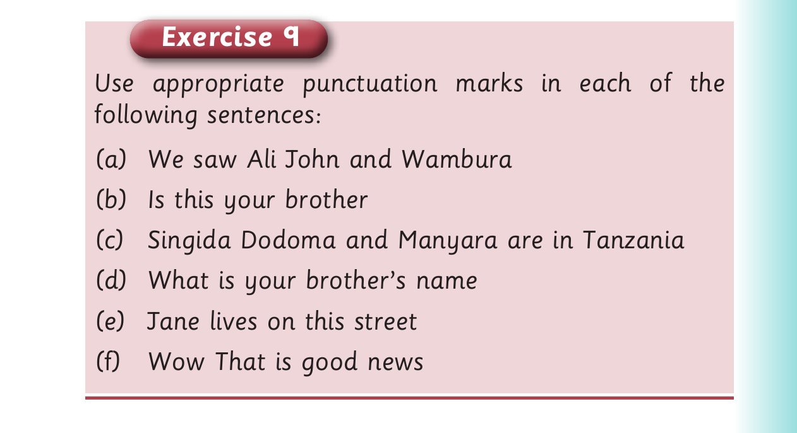

For A Visit to Mikumi National Park - continued, panel 1 of 7 presents the source activity with these printed labels and instructions: We started the first route to the northern side of the park. We saw a big buffalo lying beside the road. Mwajuma started screaming in fear. She cried out, “Oh! What a big animal that is! Take us back, please! It will kill us all!” The tour guide calmed her down. She told the driver to wait a few minutes. She whistled towards the buffalo. Then, the buffalo stood up and slowly walked away. Along the trip, we saw many other animals. These include lions, giraffes and zebras. We were very happy to have that tour. When.
We started the first route to the northern side of the park.
We saw a big buffalo lying beside the road. Mwajuma
started screaming in fear. She cried out, “Oh! What a
big animal that is! Take us back, please! It will kill us
all!” The tour guide calmed her down. She told the
driver to wait a few minutes. She whistled towards the
buffalo. Then, the buffalo stood up and slowly walked
away.
Along the trip, we saw many other animals. These
include lions, giraffes and zebras. We were very happy
to have that tour. When I got home, I told my family
about the whole wildlife experience.
2. Write sentences with an exclamation mark (!) from
the story.

For A Visit to Mikumi National Park - continued, panel 2 of 7 presents the source activity with these printed labels and instructions: Exercise 9 Use appropriate punctuation marks in each of the following sentences: (a) We saw Ali John and Wambura
Exercise 9
Use appropriate punctuation marks in each of the
following sentences:
(a) We saw Ali John and Wambura
For A Visit to Mikumi National Park - continued, panel 3 of 7 presents the source activity with these printed labels and instructions: (b) Is this your brother
(b) Is this your brother
For A Visit to Mikumi National Park - continued, panel 4 of 7 presents the source activity with these printed labels and instructions: (c) Singida Dodoma and Manyara are in Tanzania
(c) Singida Dodoma and Manyara are in Tanzania
For A Visit to Mikumi National Park - continued, panel 5 of 7 presents the source activity with these printed labels and instructions: (d) What is your brother’s name
(d) What is your brother’s name
For A Visit to Mikumi National Park - continued, panel 6 of 7 presents the source activity with these printed labels and instructions: (e) Jane lives on this street
(e) Jane lives on this street
For A Visit to Mikumi National Park - continued, panel 7 of 7 presents the source activity with these printed labels and instructions: (f) Wow That is good news
![For A Visit to Mikumi National Park - continued, panel 1 of 7 presents the source activity with these printed labels and instructions: We started the first route to the northern side of the park. We saw a big buffalo lying beside the road. Mwajuma started screaming in fear. She cried out, “Oh! What a big animal that is! Take us back, please! It will kill us all!” The tour guide calmed her down. She told the driver to wait a few minutes. She whistled towards the buffalo. Then, the buffalo stood up and slowly walked away. Along the trip, we saw many other animals. These include lions, giraffes and zebras. We were very happy to have that tour. When.](images/pg087_sec001_panel01.png)